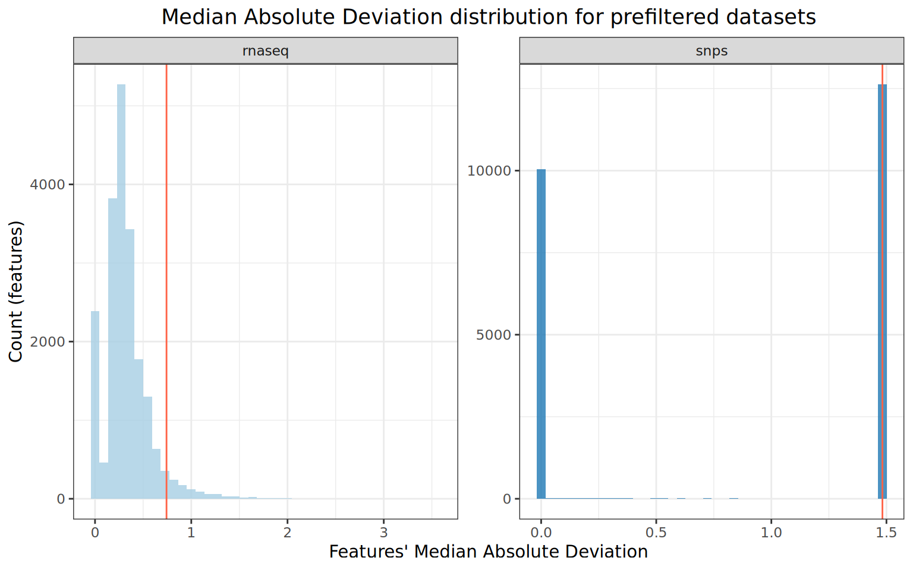
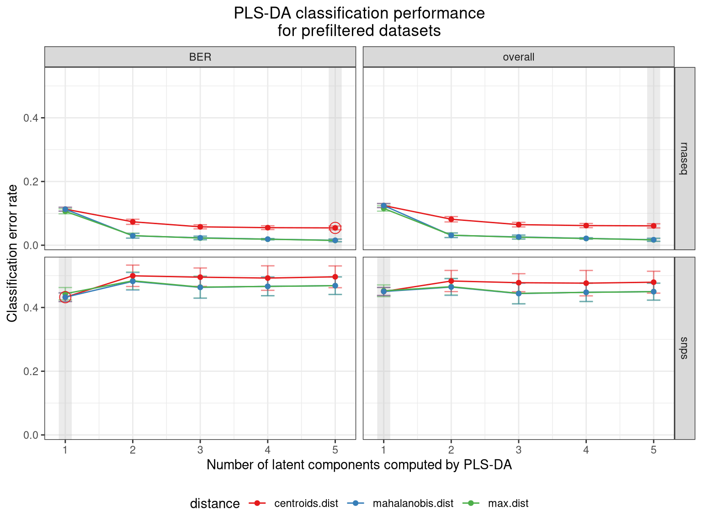

7 Dataset pre-filtering
Once the datasets have been appropriately transformed, and missing values imputed if necessary, the next step is to perform some pre-filtering to reduce the dimensions of the datasets. This applies to samples (e.g. we want to focus the analysis on a subset of samples of interest) as well as features. Pre-filtering of features is of particular importance, as datasets with large number of features lead to increased computational time and potentially lower quality results during the integration process. Note that the goal of this pre-filtering step is not to retain only interesting features, but rather to discard the less relevant features so that the datasets have a manageable size for the downstream data integration tools.
As a reminder, here is what the _targets.R script should look like so far:
_targets.R script
We will load the MultiDataSet object containing the transformed omics datasets with missing values imputed:
tar_load(mo_set_complete)
## Number of samples and features in each omics dataset
n_samples(mo_set_complete)
#> snps rnaseq metabolome
#> 139 143 139
n_features(mo_set_complete)
#> snps rnaseq metabolome
#> 23036 20335 557.1 Subsetting samples of interest
It is possible that for the integration analysis, we might want to retain only a subset of samples of interest; for example to focus on a specific phenotypic group. In this section, we will see a number of ways to subset samples of interest from a MultiDataSet object.
7.1.1 Based on sample IDs
The MultiDataSet package allows to subset a MultiDataSet object based on a vector of sample IDs. For example, here we generate a list of 10 samples to which we would like to restrict the MultiDataSet object:
We can restrict the MultiDataSet object to only these samples as follows:
mo_samples_filtered <- mo_set_complete[samples_list, ]
n_samples(mo_samples_filtered)
#> snps rnaseq metabolome
#> 9 10 10The MultiDataSet object returned only contains the 10 samples of interest. One of the selected samples was not present in the genomics dataset, which is why this dataset has only 9 samples.
7.1.2 Based on metadata
Alternatively, we might want to select samples based on some information contained in the samples metadata associated with the omics datasets. Again, this option is implemented in the MultiDataSet package through the subset() function (see their vignette for more information). For this example, we want to retain only animals from feedlot 1. This information is encoded in the feedlot column from the samples metadata of the datasets:
get_samples_metadata_combined(mo_set_complete) |> str()
#> 'data.frame': 144 obs. of 10 variables:
#> $ id : chr "R21" "Y3660" "Y3243" "R5764" ...
#> $ feedlot : chr "F1" "F1" "F1" "F2" ...
#> $ gender : chr "female" "male" "male" "male" ...
#> $ status : chr "Control" "Control" "Control" "Control" ...
#> $ day_on_feed : num 31 19 16 46 35 49 21 16 37 37 ...
#> $ rnaseq_batch : chr "B2" "B2" "B2" "B1" ...
#> $ geno_comp_1 : num 0.00785 0.85222 0.04417 0.21309 0.38939 ...
#> $ geno_comp_2 : num 0.8207 0.0936 0.1903 0.6763 0.5035 ...
#> $ geno_comp_3 : num 0.1715 0.0542 0.7656 0.1106 0.1071 ...
#> $ geno_comp_cluster: chr "K3" "K2" "K1" "K3" ...In the subset function, the first argument is the MultiDataSet object to subset, the second argument slot is for subsetting features based on their metadata (which we will see in the next section), and the third slot is for samples subsetting. We perform the subsetting by passing an expression, similar to what we would use with the dplyr::filter() function, i.e. we treat the column name on which to perform the subsetting as a variable name.
The MultiDataSet object returned contains only samples corresponding to animals from feedlot 1.
7.1.3 Retaining common samples
Most data integration tools only accept samples that are present in all omics datasets. When that is the case, the moiraine package will automatically remove samples that are absent from some datasets when preparing the input data for the corresponding integration tool. However, for convenience, we show here how to restrict a MultiDataSet object to only samples that are common to all datasets.
This is done through the commonSamples() function from the MultiDataSet package, which returns a filtered MultiDataSet object:
mo_samples_filtered <- commonSamples(mo_set_complete)
n_samples(mo_samples_filtered)
#> snps rnaseq metabolome
#> 135 135 135The returned MultiDataSet object contains 135 samples which are present in all three omics datasets (which we can confirm with the Upset plot generated in Section 4.3).
7.2 Subsetting features of interest
7.2.1 Based on feature IDs
As with samples, we might want to filter a MultiDataSet object to only specific features of interest. We will randomly select feature IDs from each omics dataset:
set.seed(36)
features_list <- get_features(mo_set_complete) |>
map(\(x) sample(x, size = 5, replace = FALSE))
str(features_list)
#> List of 3
#> $ snps : chr [1:5] "BovineHD0600012019" "BovineHD1200015003" "BTB-01046082" "BovineHD2600010539" ...
#> $ rnaseq : chr [1:5] "ENSBTAG00000002154" "ENSBTAG00000009915" "ENSBTAG00000052111" "ENSBTAG00000012274" ...
#> $ metabolome: chr [1:5] "HMDB00201" "HMDB00641" "HMDB00123" "HMDB00294" ...The subset() method implemented in the MultiDataSet package can be used to restrict the omics datasets to specific features based on a list of IDs. However, this only works by directly passing the features ID in the command, as follows:
mo_features_filtered <- subset(
mo_set_complete,
feature_id %in% c("BovineHD0600012019", "ENSBTAG00000002154")
)
n_features(mo_features_filtered)
#> snps rnaseq metabolome
#> 1 1 0While passing a vector of feature IDs doesn’t work:
This type of subsetting is made possible with the subset_features() function in moiraine:
mo_features_filtered <- subset_features(mo_set_complete, features_vec)
n_features(mo_features_filtered)
#> snps rnaseq metabolome
#> 1 1 0The subset_features() function accepts the features ID either as a vector, or as a list of vectors (typically one per dataset):
mo_features_filtered <- subset_features(mo_set_complete, features_list)
n_features(mo_features_filtered)
#> snps rnaseq metabolome
#> 5 5 5
## Getting the selected IDs as a vector
features_vec <- features_list |>
unlist() |>
unname()
head(features_vec)
#> [1] "BovineHD0600012019" "BovineHD1200015003" "BTB-01046082"
#> [4] "BovineHD2600010539" "BovineHD2600008282" "ENSBTAG00000002154"
mo_features_filtered <- subset_features(mo_set_complete, features_vec)
n_features(mo_features_filtered)
#> snps rnaseq metabolome
#> 5 5 57.2.2 Based on metadata
It is also possible to subset features based on their metadata. For that, we can use the subset() function from the MultiDataSet package, as we did for samples subsetting. For example, for the transcriptomics and metabolomics dataset, we have in the features metadata a column (de_signif) that recaps the results of a differential abundance analysis on the corresponding dataset. We could decide to select only the differentially abundant compounds from this dataset. Note that it only performs the filtering for datasets that have this column in their features metadata.
mo_features_filtered <- subset(mo_set_complete, de_signif == "DE")
#> Warning in .local(x, ...): The following sets could not be filtered by feature
#> id: snps
n_features(mo_features_filtered)
#> snps rnaseq metabolome
#> 23036 111 307.3 Features preselection
In the previous section, we saw how to restrict the MultiDataSet object to a set of features of interest. However, in a typical integration workflow, we instead want to reduce the dimensions of the omics datasets through a data-centric method that discards features least relevant to the biological problem of interest. Here, we present two approaches for features preselection: an unsupervised approach, which relies only on the omics measurements, and a supervised approach, which accounts for information we have about the samples. The choice between these two approaches will depend on the research question being investigated. Note that this preselection step is distinct from the data cleaning process that should be applied to each omics dataset, in which features with low expression or high missing values are removed. This ideally should be done before the multi-omics integration workflow constructed with moiraine, although it can be integrated in the analysis pipeline.
7.3.1 Unsupervised features preselection
In order to reduce the number of features in the omics datasets, one option is to only retain the most variable features from each dataset. We refer to this approach as unsupervised preselection, as it only relies on the omics measurements to discard irrelevant features. In the package, two metrics of feature variability are implemented: the coefficient of variation (COV), and the Median Absolute Deviation (MAD). Careful consideration is required when determining which of these metrics should be used to select the most variable features, as each has some drawbacks. In particular:
Filtering based on COV will retain features that are only present in very few samples. This might be problematic for noisy datasets in which some features are technical artefacts, or if we are looking for biomarkers that are expressed across all observations.
Filtering based on MAD will discard any feature that is absent in more than half of the observations. This might be problematic if for example we are comparing two groups with unbalanced size, and we are looking for group-specific biomarkers.
Therefore, a first step of data cleaning to remove artefact features, as well as consideration of the biological research question, is needed before proceeding.
The feature_preselection_cov_factory() and feature_preselection_mad_factory() functions allow us to perform unsupervised COV- or MAD-based preselection for some or all datasets within a MultiDataSet object. It provides two options to set the desired size of the filtered datasets: we can either specify the number of features to retain in each dataset (via the to_keep_ns argument), or the proportion of features that should be kept in each dataset (via the to_keep_props argument). For example, let’s say that we want to retain 1,000 features with the highest MAD score in both the genomics and transcriptomics datasets (as the metabolomics dataset contains only 55 compounds, no preselection will be applied to it):
feature_preselection_mad_factory(
mo_samples_complete,
to_keep_ns = c("snps" = 1000, "rnaseq" = 1000),
with_ties = TRUE,
filtered_set_target_name = "mo_presel_unsupervised"
)The feature_preselection_mad_factory works as follows:
- it creates a grouped tibble in which each row is one of the datasets to be filtered, with the number or proportion of features to retain. It is stored in the
mad_spectarget:
tar_read(mad_spec)
#> # A tibble: 2 × 4
#> dsn tkn wt tar_group
#> <chr> <dbl> <lgl> <int>
#> 1 snps 1000 TRUE 2
#> 2 rnaseq 1000 TRUE 1- it uses dynamic branching over the grouped tibble to extract each omics dataset as a matrix via the
get_dataset_matrix()function. The result of this target, calledmad_mat, is a list where each element is a matrix of omics measurements. The names of this list are specific to the dynamic branching, but the name of the omics dataset to which each matrix belongs is stored in their'dataset_name'attribute:
tar_load(mad_mat)
map_chr(mad_mat, attr, "dataset_name")
#> mad_mat_e428ef62 mad_mat_d5a0e3cc
#> "rnaseq" "snps"
map(mad_mat, \(x) x[1:5, 1:5])
#> $mad_mat_e428ef62
#> R9497 R5969 R5327 R5979 R9504
#> ENSBTAG00000000005 10.357314 11.289047 12.070536 10.201227 10.251942
#> ENSBTAG00000000008 4.836495 4.937948 4.375764 4.986154 5.710581
#> ENSBTAG00000000009 3.486141 4.054636 4.983434 3.486141 3.486141
#> ENSBTAG00000000010 12.216690 11.937084 12.079359 11.383360 11.897780
#> ENSBTAG00000000011 3.486141 4.054636 4.005139 3.979732 3.486141
#>
#> $mad_mat_d5a0e3cc
#> R21 Y3660 Y3243 R5764 P4669
#> 1_41768691 1 0 2 2 1
#> 10-27008241-A-C-rs42918694 2 2 2 1 2
#> 10-37505419-T-C-rs136559242 0 1 0 2 0
#> 10-49904259-G-A-rs471723345 1 2 2 2 2
#> 1-109550832-G-A-rs209732846 2 2 1 2 2- it uses dynamic branching over the list of matrices to perform the prefiltering for each dataset, by calling the
select_features_mad_matrix()function. The function computes the MAD coefficient of each feature, then selects the features with the highest absolute MAD values. Thewith_tiesargument determines whether more features than requested byto_keep_nsorto_keep_propsshould be kept if several features at the limit of selection have identical MAD values. Theselect_features_mad_matrix()function returns a tibble with the MAD coefficient of each feature in the dataset, as well as an indicator of whether the feature was retained or not. This is useful to produce some diagnostic plots, for example with theplot_feature_preselection_mad()function. The results of the prefiltering are stored as a list in the target calledindividual_mad_values.
tar_load(individual_mad_values)
map_chr(individual_mad_values, attr, "dataset_name")
#> individual_mad_values_0bdea42a individual_mad_values_19c0eba7
#> "rnaseq" "snps"
map(individual_mad_values, head, 3)
#> $individual_mad_values_0bdea42a
#> # A tibble: 3 × 3
#> feature_id mad selected
#> <chr> <dbl> <lgl>
#> 1 ENSBTAG00000049569 3.55 TRUE
#> 2 ENSBTAG00000048835 3.53 TRUE
#> 3 ENSBTAG00000051412 3.48 TRUE
#>
#> $individual_mad_values_19c0eba7
#> # A tibble: 3 × 3
#> feature_id mad selected
#> <chr> <dbl> <lgl>
#> 1 1_41768691 1.48 TRUE
#> 2 10-27008241-A-C-rs42918694 1.48 TRUE
#> 3 10-37505419-T-C-rs136559242 1.48 TRUE- It creates a new
MultiDataSetobject in which the relevant datasets have been filtered to only contain the selected features, viaget_filtered_dataset_variability(). By default, the target used to store this object is calledfiltered_set_mad, but this can be changed via thefiltered_set_target_nameargument (here we called itmo_presel_unsupervisedinstead).
tar_read(mo_presel_unsupervised)
#> Object of class 'MultiDataSet'
#> . assayData: 3 elements
#> . snps: 12618 features, 139 samples
#> . rnaseq: 1000 features, 143 samples
#> . metabolome: 55 features, 139 samples
#> . featureData:
#> . snps: 12618 rows, 13 cols (feature_id, ..., p_value)
#> . rnaseq: 1000 rows, 15 cols (feature_id, ..., de_signif)
#> . metabolome: 55 rows, 16 cols (feature_id, ..., de_signif)
#> . rowRanges:
#> . snps: YES
#> . rnaseq: YES
#> . metabolome: NO
#> . phenoData:
#> . snps: 139 samples, 10 cols (id, ..., geno_comp_3)
#> . rnaseq: 143 samples, 10 cols (id, ..., geno_comp_3)
#> . metabolome: 139 samples, 10 cols (id, ..., geno_comp_3)The plot_feature_preselection_mad() function can be used to visualise the distribution of MAD values across each (non-filtered) dataset and the minimum MAD value retained in the filtered datasets:
plot_feature_preselection_mad(individual_mad_values)
If we instead wanted to retain 50% of all features both the genomics and transcriptomics datasets, we would write:
feature_preselection_mad_factory(
mo_samples_complete,
to_keep_props = c("rnaseq" = 0.5, "metabolome" = 0.5),
with_ties = TRUE,
filtered_set_target_name = "mo_presel_unsupervised"
)Note that the feature_preselection_cov_factory() function works in exactly the same way, but calls the select_features_cov_matrix() function, and the results can be visualised with the plot_feature_preselection_cov() function.
For convenience, the select_features_mad() and select_features_cov() functions can be used to perform a MAD- or COV-based prefiltering on one of the omics datasets directly from a MultiDataSet object. These are wrappers around the select_features_mad_matrix() and select_features_cov_matrix() functions, respectively, and take as input a MultiDataSet object as well as the name of the omics dataset on which the preselection should be run, as well as either the number or proportion of features to retain, e.g.:
select_features_mad(mo_set_complete, "rnaseq", to_keep_n = 1000)
select_features_mad(mo_set_complete, "rnaseq", to_keep_prop = 0.5)7.3.2 Supervised features preselection
Another approach to features preselection can be preferred when we are trying to assess the features most relevant to an outcome of interest or to differences between sample groups. In this scenario, prior to integrating the datasets, it could be useful to reduce the size of the datasets by filtering out the features that are least associated with the outcome of interest. In this case, we can use some single-omics feature selection method to perform a first “crude” prefiltering.
moiraine relies on the sPLS-DA algorithm implemented in the mixOmics package for this. sparse Partial Least-Squares Discriminant Analysis (or sPLS-DA for short) is a feature selection method that aims to detect, in a multivariate dataset, the variables or features that best discriminate a categorical outcome of interest in the observations. The advantages of sPLS-DA is that it can handle datasets in which there are more features than samples, which is typically the case in omics datasets. More information can be found in Lê Cao, Boitard, and Besse (2011) or in the mixOmics vignette. By running an sPLS-DA analysis on each dataset separately, we can remove the features that are least informative with respect to the trait or outcome of interest. We refer to this approach as supervised preselection, as it relies on information about the samples to select the features of interest.
The feature_preselection_splsda_factory() function allows us to perform this supervised preselection for some or all datasets within a MultiDataSet object. It provides the option to set either the number or proportion of features to retain in each dataset, via the to_keep_ns and to_keep_props arguments. One additional argument that needs to be passed to the function is group, which gives the name of the column in the samples metadata information to be used as categorical outcome for the sPLS-DA run. This column must be present in the sample metadata of at least one of the datasets to be filtered. For this example, we will retain in each dataset 1,000 features that best discriminate the control and diseased animals. Warning: this function can take several minutes to run.
feature_preselection_splsda_factory(
mo_samples_complete,
group = "status",
to_keep_ns = c("snps" = 1000, "rnaseq" = 1000),
filtered_set_target_name = "mo_presel_supervised"
)The function works as follows:
- it creates a grouped tibble in which each row is one of the datasets to be filtered, with the number or proportion of features to retain. It is stored in the
splda_spectarget:
tar_read(splsda_spec)
#> # A tibble: 2 × 3
#> dsn tkn tar_group
#> <chr> <dbl> <int>
#> 1 snps 1000 2
#> 2 rnaseq 1000 1- it uses dynamic branching over the grouped tibble to generate for each omics dataset the necessary input for the
mixOmicspackage, via theget_input_splsda()function. The result, stored in theindividual_splsda_inputtarget, is a list of sPLS-DA inputs, i.e. a list itself containing the omics dataset as a matrix (with samples as rows and features as columns) and a vector indicating the grouping of the samples:
tar_load(individual_splsda_input)
map(individual_splsda_input, names)
#> $individual_splsda_input_a82e0f4d
#> [1] "rnaseq" "Y"
#>
#> $individual_splsda_input_de775b91
#> [1] "snps" "Y"
map(individual_splsda_input, \(x) head(x[["Y"]]))
#> $individual_splsda_input_a82e0f4d
#> R9497 R5969 R5327 R5979 R9504 R5994
#> BRD BRD BRD BRD BRD BRD
#> Levels: BRD Control
#>
#> $individual_splsda_input_de775b91
#> R21 Y3660 Y3243 R5764 P4669 R5452
#> Control Control Control Control BRD Control
#> Levels: BRD Control- it uses dynamic branching to run a performance cross-validation analysis on each dataset, via the function
perf_splsda()(which is essentially a wrapper for themixOmics::perf()function). This cross-validation step selects the optimal number of components to compute for each dataset during the sPLS-DA analysis. The results of this cross-validation step are saved in a list, stored in theindividual_splsda_perftarget. It can take a bit of time (for this example, around 6 minutes per dataset).
The cross-validation results be visualised with the plot_feature_preselection_splsda() function, in which the chosen value for the number of components to compute for each dataset is highlighted in grey:
plot_feature_preselection_splsda(individual_splsda_perf)
- it uses dynamic branching to run sPLS-DA on each dataset, via the
run_splsda()function. The results are stored as a list in theindividual_splsda_runtarget.
- it creates a new
MultiDataSetobject in which the relevant datasets have been filtered to only contain the selected features. By default, the target used to store this object is calledfiltered_set_mad, but this can be changed via thefiltered_set_target_nameargument.
tar_read(mo_presel_supervised)
#> Object of class 'MultiDataSet'
#> . assayData: 3 elements
#> . snps: 1000 features, 139 samples
#> . rnaseq: 994 features, 143 samples
#> . metabolome: 55 features, 139 samples
#> . featureData:
#> . snps: 1000 rows, 13 cols (feature_id, ..., p_value)
#> . rnaseq: 994 rows, 15 cols (feature_id, ..., de_signif)
#> . metabolome: 55 rows, 16 cols (feature_id, ..., de_signif)
#> . rowRanges:
#> . snps: YES
#> . rnaseq: YES
#> . metabolome: NO
#> . phenoData:
#> . snps: 139 samples, 10 cols (id, ..., geno_comp_3)
#> . rnaseq: 143 samples, 10 cols (id, ..., geno_comp_3)
#> . metabolome: 139 samples, 10 cols (id, ..., geno_comp_3)You can notice that with this approach, we are not guaranteed to retain exactly 1,000 features per dataset. This is because, in an sPLS-DA run, a same feature can be selected for more than one latent component, and so the number of features retained will be slightly smaller than the one requested.
7.4 Recap – targets list
For convenience, here is the list of targets that we created in this section:
Targets list for datasets prefiltering
list(
## Unsupervised feature selection based on MAD score
feature_preselection_mad_factory(
mo_set_complete,
to_keep_ns = c("snps" = 1000, "rnaseq" = 1000),
with_ties = TRUE,
filtered_set_target_name = "mo_presel_unsupervised"
),
## Diagnostic plot for MAD-based feature selection
tar_target(
preselection_mad_plot,
plot_feature_preselection_mad(individual_mad_values)
),
## Supervised feature selection based on bruising groups
feature_preselection_splsda_factory(
mo_set_complete,
group = "status",
to_keep_ns = c("snps" = 1000, "rnaseq" = 1000),
filtered_set_target_name = "mo_presel_supervised"
),
## Diagnostic plot for sPLS-DA based feature selection
tar_target(
preselection_splsda_plot,
plot_feature_preselection_splsda(individual_splsda_perf)
)
)